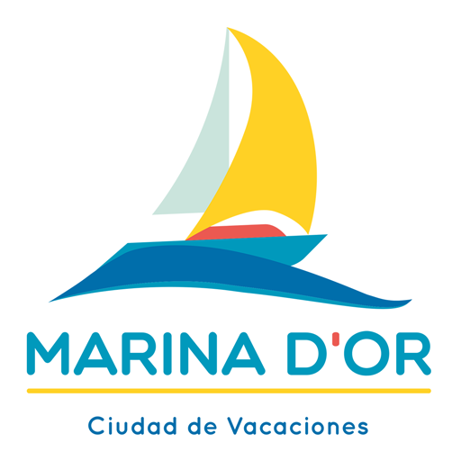

MARINA DOR — Ciudad de Vacaciones
Disfruta de una experiencia unica con todas las actividades que se realizan en nuestras instalaciones

Marina dor — Ciudad de Vacaciones es una urbanización ubicada en el municipio castellonense de Oropesa del Mar, con hoteles de categorías 5, 4 y 3 estrellas, así como con apartamentos turísticos en alquiler, 8 parques de ocio, un centro médico y un balneario de agua marina. Ocupa una superficie aproximada de 1,4 millones de metros cuadrados, de los cuales más de medio millón están destinados a zonas verdes y áreas ajardinadas, además de contar con varias dotaciones deportivas y recreativas propias del carácter turístico de la urbanización. Fue ideada y promovida bajo la presidencia del empresario Jesús Ger García, que inició su construcción en los años 90. Ha llegado a contar con más de 3.000 empleados y unas 100 oficinas en España y en el extranjero (Reino Unido, Francia, China e Irlanda). La playa situada frente al complejo es la playa Les Amplaries, que limita al norte con la playa de Torre de la Sal y al sur con la playa Morro de Gos, con una longitud de 2.100 m. Recibe la categoría de “Bandera Azul”, desde 2005, galardón que anualmente otorga la Fundación Europea de Educación Ambiental (FEE). Marina d'Or se ha caracterizado por una intensa actividad publicitaria y por el patrocinio de concursos de belleza, como Miss España o diferentes eventos deportivos.
Para más información en este enlace
Índice
- Actividades
- Alojamientos: Hoteles y apartamentos
- Mapa del recinto
Actividades
¡En Marina Dor, te invitamos a vivir las mejores vacaciones de tu vida con nuestros emocionantes parques de atracciones! Nuestra amplia variedad de parques temáticos te garantiza diversión y entretenimiento sin límites, creando recuerdos inolvidables para toda la familia. Desde el emocionante Parque Acuático Polinesia, donde puedes disfrutar de emocionantes toboganes y relajantes piscinas, hasta el mágico Mundo Fantasía, que te transportará a un mundo de maravillas y aventuras. Con atracciones emocionantes diseñadas para personas de todas las edades, Marina Dor es el destino perfecto para unas vacaciones llenas de diversión y emoción. ¡No dejes pasar la oportunidad de crear recuerdos inolvidables con tus seres queridos en nuestros parques temáticos!
¡Te esperamos en Marina Dor!
Más información sobre las actividades
Para más información de las actividades haz click en este enlace
Alojamientos: Hoteles y apartamentos
¡Te damos la más cordial bienvenida a nuestros hoteles y apartamentos turísticos en MarinaDor! Ubicados en el corazón de esta encantadora ciudad, te brindamos alojamientos cómodos y acogedores para que disfrutes de una estadía inolvidable. Nuestras instalaciones están equipadas con comodidades modernas y nuestro amable equipo siempre está dispuesto a hacer tu estancia más placentera. Desde nuestra estratégica ubicación, podrás explorar Marina Dor y descubrir todo lo que esta maravillosa ciudad tiene para ofrecer.
¡No esperes más, reserva ahora y vive una experiencia única con nosotros!
Mapa del recinto
¡Explora nuestro parque con facilidad gracias a nuestro mapa detallado!
En este detallado mapa, te proporcionamos una guía completa de todas las maravillosas experiencias que te esperan en Marina Dor. Aquí, podrás ubicar fácilmente nuestras emocionantes atracciones, desde montañas rusas vertiginosas hasta espectáculos mágicos que te dejarán sin aliento. Además, podrás descubrir las deliciosas áreas de comida donde podrás satisfacer tus antojos y saborear una amplia variedad de delicias culinarias.
Para tu comodidad, hemos marcado claramente la ubicación de los baños, asegurando que tengas fácil acceso a instalaciones limpias y bien mantenidas en todo momento. Y, por supuesto, no olvides echar un vistazo a nuestra tienda de souvenirs, donde encontrarás recuerdos encantadores para llevar a casa y recordar tu visita a Marina Dor.
Así que, planifica tu día con este mapa detallado y asegúrate de no perderte nada en este mágico rincón. Marina Dor te espera con los brazos abiertos para que vivas momentos inolvidables en cada esquina. ¡Disfruta al máximo de tu experiencia con nosotros!